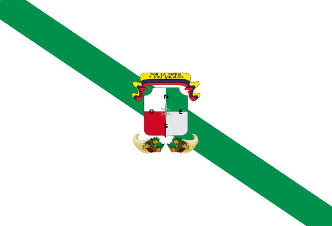
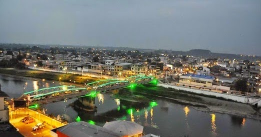
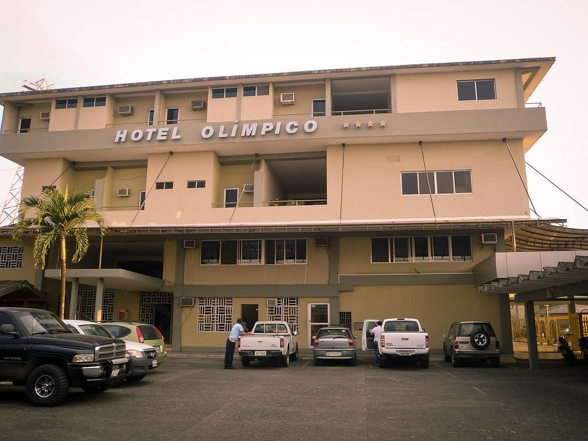

CANTÓN QUEVEDO
Volver al inicio

Breve descripción y reseña del cantón
Quevedo es uno de los cantones más importantes de la provincia
de Los Ríos. Se destaca por su comercio, agricultura y
producción de cacao, banano y maíz. Está atravesado por el
río Quevedo.
Parroquias
Urbanas: Quevedo, San Camilo, Guayacán, Nicolás Infante Díaz,
Venus del Río Quevedo, 24 de Mayo y Viva Alfaro.
Rurales: San Carlos y La Esperanza.
Platos de comida típicos
- Chaulafán quevedeño.
- Bolón de verde.
- Caldo de salchicha.
- Encebollado.
Lugares turísticos y por qué son turísticos


- Malecón del río Quevedo: permite disfrutar de los paisajes del río.
- Parque Central: espacio de encuentro y recreación.
- Parques y áreas recreativas: lugares para compartir con la familia.
Hoteles donde alojarse

- Hotel Olímpico.
- Hotel Somagg.
- Golden Hotel.
- Palmar del Sol Hotel.
Alcalde
Alexis Matute (período 2023-2027; verificar autoridad vigente).
Población
Aproximadamente 206.000 habitantes (referencia del Censo 2022).
Mapa del cantón
Ver mapa de Quevedo
Regresar a la página principal